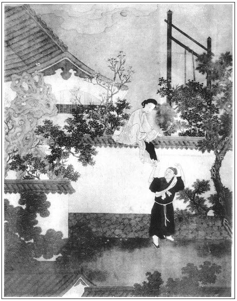

張回此回發脫雪娥到守備府也。一篇文字，總是在打牆板兒兩閒話結語上結穴。蓋為春梅發洩寒徹骨之鬱結也。
而月娘使被逐之奴復歸，且全不防閒門戶，是又在十陽秋之內矣。作者何恨月娘至此！而蕙蓮公案至此又結。
開手寫李衙內問玉樓。若是俗筆，自應接寫玉樓愛嫁。看他接手即入雪娥事，真令玉樓事似絕不相干，下回卻又一筆勾轉，既為玉樓抬高身份，又為衙內遙寫相思，而行文亦真有蝶穿花徑，鶴舞雲衢之妙。不是一直寫去，如三家村冬烘先生講日記故事。
此一回寫雪娥一生黠滑，故如此也。
詩曰：
菟絲附蓬麻，引蔓原不長。
失身與狂夫，不如棄道旁。
暮夜為儂好，席不暖儂床。
昏來晨一別，無乃太匆忙。
行將濱死地，老痛迫中腸。

話說吳大舅領著月娘等一簇男女，離了永福寺，順著大樹長堤前來。玳安又早在杏花張夾玉樓在內。酒樓下邊，人煙熱鬧，揀高阜去處，幕天席地設下酒餚，等候多時了。遠遠望月娘眾人轎子驢子到了，問道：「如何這咱才來？」月娘又把永福寺中遇見春梅告訴一遍。不一時斟上酒來。眾人坐下正飲酒，只見樓下香車繡轂往來，人煙喧雜。月娘眾人躧著高阜，把眼觀看，只見人山人海圍著，都看教師走馬耍解。
原來是本縣知縣相公兒子李衙內，名喚李拱璧，張夾心與理如合璧也。年約三十餘歲，見為國子上捨，一生風流博浪，懶習詩書，專好鷹犬走馬，打毬蹴踘，常在三瓦兩巷中走，人稱他為「李棍子」。那日穿著一弄兒輕羅軟滑衣裳，頭戴金頂纏棕小帽，腳踏干黃靴，同廊吏何不韋帶領二三十好漢，拿彈弓、吹筒、毬棒在於杏花村大酒樓下，看教師李貴走馬賣解，豎肩樁、隔肚帶，輪槍舞棒，做各樣技藝頑耍，引了許多男女圍著哄笑。那李貴諢名為山東夜叉，張夾已伏李貴。頭帶萬字巾，身穿紫窄衫，銷金裹肚，坐下銀鬃馬，手執朱紅桿明槍，背插招風令字旗，在街心扳鞍上馬，往來賣弄手段。這李衙內正看處，忽抬頭看見一簇婦人在高阜處飲酒，內中一個長挑身材婦人，不覺心搖目蕩，觀之不足，看之有餘，口中不言，心內暗道：「不知是誰家婦女，有男子漢沒有？」繡眉玉樓嫁人意說出便傷貞淑，只看無意中暗暗逗露，處賢者以禮也。一面叫過手下答應的小張閒架兒來，張夾必用舊人，方知端的。悄悄分付：「你去那高坡上，打聽那三個穿白的婦人是誰家的。訪得的實，告我知道。」那小張閒應諾，雲飛跑去。不多時，走到跟前附耳低言回報說：「如此這般，是縣門前西門慶家妻小。一個年老的姓吳，是他妗子；一個五短身材，是他大娘子吳月娘；那個長挑身材，有白麻子的，是第三個娘子，姓孟，名玉樓；如今都守寡在家。」這李衙內聽了，獨看上孟玉樓，重賞小張閒，不在話下。
吳月娘和大舅眾人觀看了半日，見日色銜山，令玳安收拾了食盒，上轎騎驢一徑回家。有詩為證：
柳底花陰壓路塵，一回游賞一回新。
有緣千里來相會，無緣對面不相親。
這裡月娘眾人回家不題。卻說那日，孫雪娥與西門大姐在家，午後時分無事，都出大門首站立。也是天假其便，不想一個搖驚閨的過來。那時賣脂粉、花翠生活，磨鏡子，都搖驚閨。大姐說：「我鏡子昏了。」使平安兒：「叫住那人，與我磨鏡子。」那人放下擔兒，說道：「我不會磨鏡子，我只賣些金銀生活，首飾花翠。」站立在門前，只顧眼上眼下看著雪娥。雪娥便道：「那漢子，你不會磨鏡子，去罷，只顧看我怎的！」繡眉雪娥與來旺，情人也，曾間別幾何時，而便不復認矣，蠢甚。那人說：「雪姑娘，大姑娘，不認的我了？」大姐道：「眼熟，急忙想不起來。」那人道：「我是爹手裡出去的來旺兒。」雪娥便道：「你這幾年在那裡來？出落得恁胖了。」來旺兒道：「我離了爹門，到原籍徐州，家裡閒著沒營生，投跟了個老爹上京來做官。不想到半路裡，他老爺兒死了，丁憂家去了。我便投在城內顧銀鋪，學會了此銀行手藝，各樣生活。這兩日行市遲，顧銀鋪教我挑副擔兒，出來街上發賣些零碎。看見娘每在門首，不敢來相認，恐怕踅門瞭戶的。今日不是你老人家叫住，還不敢相認。」雪娥道：「原來是你。教我只顧認了半日，白想不起。既是舊兒女，怕怎的？」因問：「你擔兒裡賣的是甚麼生活？挑進裡面，等俺每看一看。」那來旺兒一面把擔兒挑入裡邊院子裡來。打開箱子，用篋兒托出幾樣首飾來：金銀鑲嵌不等，打造得十分奇巧。大姐與雪娥看了一回，問來旺兒：「你還有花翠，拿出來。」這孫雪娥便留了他一對翠鳳，一對柳穿金魚兒。大姐便稱出銀子來與他。雪娥兩樣生活，欠他一兩二錢銀子，約下他：「明日早來取罷。今日你大娘不在家，和你三娘和哥兒都往墳上與你爹燒紙去了。」來旺道：「我去年在家裡，就聽見人說爹死了。大娘生了哥兒，怕不的好大了。」雪娥道：「你大娘孩兒如今才周半兒。一家兒大大小小，如寶上珠一般，全看他過日子哩。」說話中間，來昭妻一丈青出來，傾了盞茶與他吃，張夾又映一人。那來旺兒接了茶，與他唱了個喏。來昭也在跟前，同敘了回話。分付：「你明日來見見大娘。」那來旺兒挑擔出門。
到晚上，月娘眾人轎子來家。雪娥、大姐、眾人丫頭接著，都磕了頭。玳安跟盒擔走不上，雇了疋驢兒騎來家，打發抬盒人去了。月娘告訴雪娥、大姐，說今日寺裡遇見春梅一節：「原來他把潘家的就葬在寺後首，俺每也不知。他來替他娘燒紙，誤打誤撞遇見他。娘兒每又認了回親。張夾丑絕月娘。先是寺里長老擺齋吃了。落後他又教伴當擺上他家的四五十攢盒，各樣菜蔬下飯，篩酒上來，通吃不了。他看見哥兒，又與了他一對簪兒，好不和氣。起解行三坐五，坐著大轎子，許多跟隨。又且是出落的比舊時長大了好些，越發白胖了。」繡眉月娘口角津津，只以誤遇為幸，認親為榮，與簪為厚，全不以賣去為愧，亦大可笑。張夾說來口角浸浸，真醜絕月娘。吳大妗子道：「他倒也不改常忘舊。那時在咱家時，我見他比眾丫鬟行事兒正大，說話兒沉穩，就是個才料兒。你看今日福至心靈，恁般造化。」繡眉往日不聞有此言，差甚。張夾將上文無數寫春梅之筆一提。孟玉樓道：「姐姐沒問他，我問他來。果然半年沒洗換，身上懷著喜事哩。也只是八九月裡孩子，守備好不喜歡哩。薛嫂兒說的倒不差。」張夾玉樓別有深心。說了一回，雪娥題起：「今日娘不在，我和大姐在門首，看見來旺兒。原來他又在這裡學會了銀匠，挑著擔兒賣金銀生活花翠。俺每就不認得了，買了他幾枝花翠，他問娘來，我說往墳上燒紙去了。」月娘道：「你怎的不教他等著我來家？」張夾又是自惹。雪娥道：「俺每教他明日來。」
正坐著說話，只見奶子如意兒向前對月娘說：「哥兒來家這半日，只是昏睡不醒，口中出冷氣，身上湯燒火熱的。」這月娘聽見慌了，向炕上抱起孩兒來，口搵著口兒，果然出冷汗，渾身發熱，罵如意兒：「好淫婦，此是轎子冷了孩兒了。」如意兒道：「我拿小被兒裹的沿沿的，怎得凍著？」月娘道：「再不是抱了往那死鬼墳上，諕了他來了。張夾寫月娘，真是十二分不好看。那等分付教你休抱他去，你不依，浪著抱的去了。」如意兒道：「早小玉姐看著，只抱了他那裡看看就來了，幾時諕著他來！」月娘道：「別要說嘴，看那看兒便怎的？卻把他諕了。」急忙叫來安兒：「快請劉婆子去。」不一時，劉婆來到。看了脈息，摸了身上，說：「著了些涼寒，撞見邪祟了。」繡旁一猜便猜至小心上。張旁金蓮死尚懷嫉乎？留了兩服硃砂丸，用薑湯灌下去。分付奶子抱著他，熱炕上睡到半夜，出了些冷汗，身上才涼了。於是管待劉婆子吃了茶，與了他三錢銀子，叫他明日還來看看。一家子慌的要不的，起起倒倒，整亂了半夜。
卻說來旺，次日依舊挑將生活擔兒，來到西門慶門首，與來昭唱喏，說：「昨日雪姑娘留下我些生活，許下今日教我來取銀子，就見見大娘。」來昭道：「你且去著，改日來。昨日大娘來家，哥兒不好，叫醫婆、太醫看，下藥，整亂了一夜，好不心焦，今日才好些，那得工夫稱銀子與你。」正說著，只見月娘、玉樓、雪娥送出劉婆子，來到大門首，看見來旺兒。那來旺兒扒在地下，與月娘、玉樓磕下兩個頭。月娘道：「幾時不見你，就不來這裡走走。」來旺兒悉將前事說了一遍，「要來不好來的。」月娘道：「舊兒女人家，怕怎的？你爹又沒了。張夾月娘如此無禮。當初只因潘家那淫婦，一頭放火，一頭放水，架的舌，把個好媳婦兒生生逼勒的吊死了，將有作沒，把你墊發了去。今日天也不容，他往那去了！」繡眉月娘一味以誠待人，雖不失為好人，然禍亂皆此好人釀成也，世亦何貴有此好人哉！張夾月娘如此無禮，真是不堪。來旺兒道：「也說不的，只是娘心裡明白就是了。」說了回話，月娘問他：「賣的是甚樣生活？拿出來瞧。」揀了他幾件首飾，該還他三兩二錢銀子，都用等子稱了與他。叫他進入儀門裡面，繡旁又引賊入室。分付小玉取一壺酒來，又是一盤點心，教他吃。那雪娥在廚上一力攛掇，又熱了一大碗肉出來與他。吃的酒飯飽了，磕頭出門。月娘、玉樓眾人歸到後邊去。繡旁絕不防嫌。張夾如此無禮，真是不堪。雪娥獨自悄悄和他說話：「你常常來走著，怕怎的！奴有話教來昭嫂子對你說。我明日晚夕，在此儀門裡紫牆兒跟前耳房內等你。」兩個遞了眼色，這來旺兒就知其意，說：「這儀門晚夕關不關？」雪娥道：「如此這般，你來先到來昭屋裡，等到晚夕，踩著梯凳，越過牆，順著遮隔，我這邊接你下來。咱二人會合一回，還有細話與你說。」這來旺得了此話，正是歡從額起，喜向腮生，作辭雪娥，挑擔兒出門。
正是：
不著家神，弄不得家鬼。
有詩為證：
閒來無事倚門闌，偶遇多情舊日緣。
對人不敢高聲語，故把秋波送幾番。
這來旺兒歡喜來家，一宿無話。到次日，也不挑擔兒出來賣生活，慢慢踅來西門慶門首，等來昭出來與他唱喏。那來昭便說：「旺哥稀罕，好些時不見你了。」來旺兒笑道：「不是也不來，裡邊雪姑娘少我幾錢生活銀，討討。」來昭一面把來旺兒讓到房裡坐下。來旺兒道：「嫂子怎不見？」來昭道：「你嫂子今日後邊上灶哩。」那來旺兒拿出一兩銀子，遞與來昭，繡眉好歹俱要此物向前。說：「這銀子取壺酒來，和哥嫂吃。」來昭道：「何消這許多。」即叫他兒子鐵棍兒過來。那鐵棍吊起頭去──十五歲了，拿壺出來，打了一大注酒，使他後邊叫一丈青來。不一時，一丈青蓋了一錫鍋熱飯，一大碗雜熬下飯，兩碟菜蔬，說道：「好呀，旺官兒在這裡。」來昭便拿出銀子與一丈青瞧，說：「兄弟破費，要打壺酒咱兩口兒吃。」一丈青笑道：「無功消受，怎生使得？」一面放了炕桌，讓來旺炕上坐。擺下酒菜，把酒來斟。來旺兒先傾頭一盞，遞與來昭，次遞一盞與一丈青，深深唱喏，說：「一向不見哥嫂，這盞水酒孝順哥嫂。」一丈青便說：「哥嫂不道酒肉吃傷了！你對真人休說假話。裡邊雪姑娘昨日已央及達知我了，你兩個舊情不斷，托俺每兩口兒如此這般周全你。你休推睡裡夢裡，要知山下路，須問過來人。你若入港相會，有東西出來，休要獨吃，須把些汁水教我呷一呷，俺替你每須耽許多利害。」張夾寫人情便二十分到。那來旺便跪下說：「只望哥嫂周全，並不敢有忘。」說畢，把酒吃了一回。一丈青往後邊和雪娥答了話出來，對他說，約定晚上來，來昭屋裡窩藏，待夜裡關上儀門，後邊人歇下，越牆而過，於中取事。有詩為證：
報應本無私，影響皆相似。
要知禍福因，但看所為事。
這來旺得了此言，回來家，巴不到晚，踅到來昭屋裡，打酒和他兩口兒吃。至更深時分，更無一人覺的，直待的大門關了，後邊儀門上了拴，家中大小歇息定了，彼此都有個暗號兒，只聽牆內雪娥咳嗽之聲。這來旺兒踏著梯凳，黑暗中扒過粉牆，雪娥那邊用凳子接著。兩個就在西耳房堆馬鞍子去處，兩個相摟相抱，雲雨做一處。彼此都是曠夫寡婦，欲心如火。那來旺兒纓槍強壯，盡力弄了一回，樂極精來，一洩如注。張夾比藏春塢何如？ 干畢，雪娥遞與他一包金銀首飾，幾兩碎銀子，兩件段子衣服，分付：「明日晚夕你再來，我還有些細軟與你。你外邊尋下安身去處。往後這家中過不出好來，不如和你悄悄出去，外邊尋下房兒，成其夫婦。你又會銀行手藝，愁過不得日子？」繡眉所算亦是。既有此算，何不稟明月娘，擇一夫嫁之為正大也。來旺兒便說：「如今東門外細米巷，有我個姨娘，有名收生的屈老娘。他那裡曲彎小巷，倒避眼，咱兩個投奔那裡去。遲些時，看無動靜，我帶你往原籍家裡，買幾畝地種去也好。」兩個商量已定。這來旺就作別雪娥，依舊扒過牆來，到來昭屋裡。等至天明，開了大門，挨身出去。到黃昏時分，又來門首，踅入來昭屋裡。晚夕依舊跳過牆去，張眉看他扒過牆來，跳過牆去，比西門、瓶兒舊事何如？兩個幹事。朝來暮往，非止一日，也抵盜了許多細軟東西，金銀器皿，衣服之類。來昭兩口子也得抽分好些肥己，張夾月娘守家，如此木偶。俱不必細說。
一日，後邊月娘看孝哥兒出花兒，心中不快，睡得早。這雪娥房中使女中秋兒，原是大姐使的，因李嬌兒房中元宵兒被敬濟要了，月娘就把中秋兒與了雪娥，把元宵兒伏侍大姐。那一日，雪娥打發中秋兒睡下，房裡打點一大包釵環頭面，裝在一個匣內，用手帕蓋了頭，隨身衣服，約定來旺兒在來昭屋裡等候，兩個要走。來昭便說：「不爭你走了，我看守大門，管放水鴨兒！若大娘知道，問我要人怎的？不如你每打房上去，就躧破些瓦，還有蹤跡。」來旺兒道：「哥也說得是。」雪娥又留一個銀折盂，一根金耳斡，一件青綾襖，一條黃綾裙，謝了他兩口兒。直等五更鼓，月黑之時，隔房扒過去。來昭夫婦又篩上兩大鐘暖酒，與來旺、雪娥吃，說：「吃了好走，路上壯膽些。」吃到五更時分，每人拿著一根香，躧著梯子，打發兩個扒上房去，一步一步把房上瓦也跳破許多。比及扒到房簷跟前，街上人還未行走，聽巡捕的聲音，這來旺兒先跳下去，後卻教雪娥躧著他肩背，接摟下來。兩個往前邊走，到十字路口上，被巡捕的攔住，繡眉私奔乃千古才子佳人偶為奇事，豈愚夫愚婦所可效也。雪娥、來旺宜敗也。便問：「往那裡去的男女？」雪娥便諕慌了手腳。這來旺兒不慌不忙，把手中官香彈了一彈，說道：「俺是夫婦二人，前往城外岳廟裡燒香，起的早了些，長官勿怪。」那人問：「背的包袱內是甚麼？」來旺兒道：「是香燭紙馬。」那人道：「既是兩口兒岳廟燒香，也是好事，你快去罷。」這來旺兒得不的一聲，拉著雪娥，往前飛走。走到城下，城門才開。張夾可知是黑夜出來。打人鬧裡挨出城去，轉了幾條街巷。
原來細米巷在個僻靜去處，住著不多幾家人家，都是矮房低廈。到於屈姥姥家，屈姥姥還未開門。叫了半日，屈姥姥才起來開了門，見來旺兒領了個婦人來。原來來旺兒本姓鄭，名喚鄭旺，說：「這婦人是我新尋的妻小。姨娘這裡有房子，且借一間，寄住些時，再尋房子。」遞與屈姥姥三兩銀子，教買柴米。那屈姥姥得了銀子，只得留下。他兒子屈鐺，張夾鐺者，三足鍋也，雪遇煮，焉能不壞。因見鄭旺夫妻二人，帶著許多金銀首飾東西，夜晚見財起意，就掘開房門偷盜出來去耍錢，致被捉獲，具了事件，拿去本縣見官。李知縣見系賊贓之事，贓物見在，即差人押著屈鐺到家，把鄭旺、孫雪娥一條索子都拴了。那雪娥諕的臉蠟查也似黃了，換了滲淡衣裳，帶著眼紗，把手上戒指都勒下來打發了公人，押去見官。當下哄動了一街人觀看，有認得的，說是西門慶家小老婆，今被這走出的小廝來旺兒──改名鄭旺通姦，拐盜財物在外居住。張夾蕙蓮公案，如此歸結。又被這屈鐺掏摸了，今事發見官。當下一個傳十個，十個傳百個，路上行人口似飛。繡眉凡西門慶壞事必盛為播揚者，以其作書懲創之大意故耳。
月娘家中自從雪娥走了，房中中秋兒見箱內細軟首飾都沒了，衣服丟的亂三攪四，報與月娘。月娘吃了一驚，便問中秋兒：「你跟著他睡，走了，你豈不知？」中秋兒便說：「他要便晚夕悄悄偷走出外邊，半日方回，不知詳細。」月娘又問來昭：「你看守大門，人出去你怎不曉的？」來昭便說：「大門每日上鎖，莫不他飛出去！」張夾逆奴卻有如此說話。落後看見房上瓦躧破許多，方知越房而去了。又不敢使人躧訪，只得按納含忍。不想本縣知縣當堂理問這件事，先把屈鐺夾了一頓，追出金頭面四件，銀首飾三件，金環一雙，銀鍾二個，碎銀五兩，衣服二件，手帕一個，匣一個。向鄭旺名下追出銀三十兩，金碗簪一對，金仙子一件，戒指四個。向雪娥名下追出金挑心一件，銀鐲一付，金鈕五付，銀簪四對，碎銀一包。張夾比牆頭物何如？屈姥姥名下追出銀三兩。就將來旺兒問擬奴婢因奸盜取財物，屈鐺系竊盜，俱系雜犯死罪，准徒五年，贓物入官。雪娥孫氏系西門慶妾，與屈姥姥當下都當官拶了一拶。屈姥姥供明放了。雪娥責令本縣差人到西門慶家，教人遞領狀領孫氏。那吳月娘叫吳大舅來商議：「已是出醜，平白又領了來家做甚麼？繡旁有主意。沒的玷污了家門，與死的裝幌子。」張夾文字亦無後回之筆。打發了差人錢，回了知縣話。知縣拘將官媒人來，當官辨賣。
卻說守備府中，春梅打聽得知，說西門慶家中孫雪娥如此這般，被來旺兒拐出，盜了財物去在外居住，事發到官，如今當官辨賣。這春梅聽見，要買他來家上灶，要打他嘴，以報平昔之仇。張夾必寫雪娥出醜者，為此一句。蓋春梅吐氣，雪能不受辱乎？對守備說：「雪娥善能上灶，會做的好茶飯湯水，買來家中伏侍。」這守備即差張勝、李安。拿帖兒對知縣說。知縣自恁要做分上，只要八兩銀子官價。交完銀子，領到府中，先見了大奶奶並二奶奶孫氏，次後到房中來見春梅。春梅正在房裡縷金床上，錦帳之中才起來。繡旁寫出富貴驕奢之態。張夾極力一抬。手下丫鬟領雪娥見面。那雪娥見是春梅，不免低頭進見。望上倒身下拜，磕了四個頭。這春梅把眼瞪一瞪，繡旁畫。張夾是春梅不是金蓮。喚將當直的家人媳婦上來，「與我把這賤人撮去了䯼髻，剝了上蓋衣裳，打入廚下，與我燒火做飯。」這雪娥聽了，暗暗叫苦。自古世間打牆板兒翻上下，掃米卻做管倉人。既在他簷下，怎敢不低頭？孫雪娥到此地步，只得摘了髻兒，換了艷服，滿臉悲慟，往廚下去了。有詩為證：
布袋和尚到明州，策杖芒鞋任處游。
饒你化身千百億，一身還有一身愁。
文回文禹門云：春梅在西門慶家中，並非不得時之人，亦非安本分之婢，固由於潘金蓮之縱容，亦由於西門慶之寵愛。論其性情，驕而自負，傲而難馴，論其行為，淫等於金蓮，狠同於桂姐。西門之奴僕，未敢怠慢，西門妻妾，未嘗欺凌，而李銘固應受其殃，秋菊何事遭其毒？打狗彼豈無心，打人彼實主使，李瓶兒、官哥之死，春梅與有功焉。至郁大姐之受罵，不但非奴婢所宜，亦失家門之體，月娘不以為然，想是大姐姐不當管而管矣。金蓮以為罵得好，西門慶以為罵得是，批者自應亦以為然也，是又一縱容、寵愛春梅者也。無怪其以月娘相遇為羞，而以雪娥被辱為快也。睚眥必報，小人得志之常情，君子不取焉，其亦以為快者，又一小人矣。
此一回寫雪娥私逃，輾轉而入於春梅之手。在雪娥自取其辱，大可辱之也。而在春梅則不可辱之，晉文公不誅斬袂之人，楚莊王不問絕纓之將，此處正可以見人之度量，見人之心胸，並可以決人之福澤，定人之壽算。打之罵之，不過添其仇恨，不如愧之感之，正可動其悔悟。況當日雪娥曾為金蓮受辱，春梅並未嘗為雪娥受氣，不得謂仇人相見，亦不得謂報施不爽也。春梅小妮子，何足語此。獨不解以春梅此刻為志士得意之時，恩怨分明之日者，亦不過從炎涼起見，以成敗論人耳。其責備月娘勢利，是以月娘責備月娘矣。